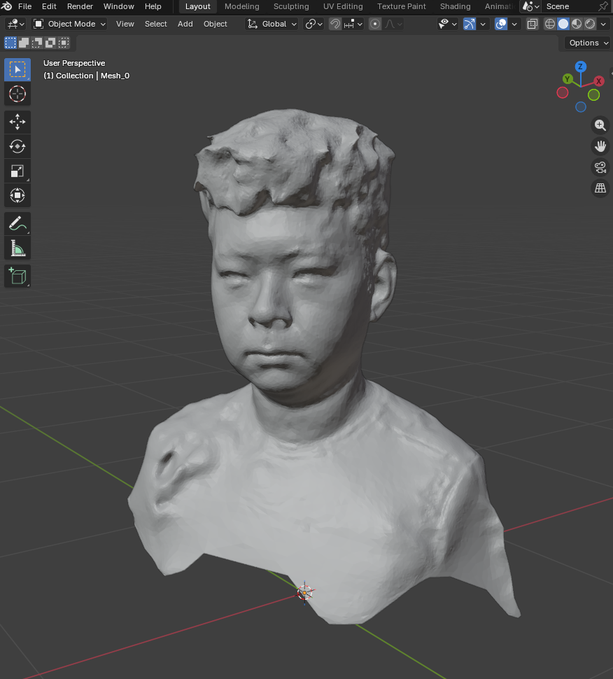
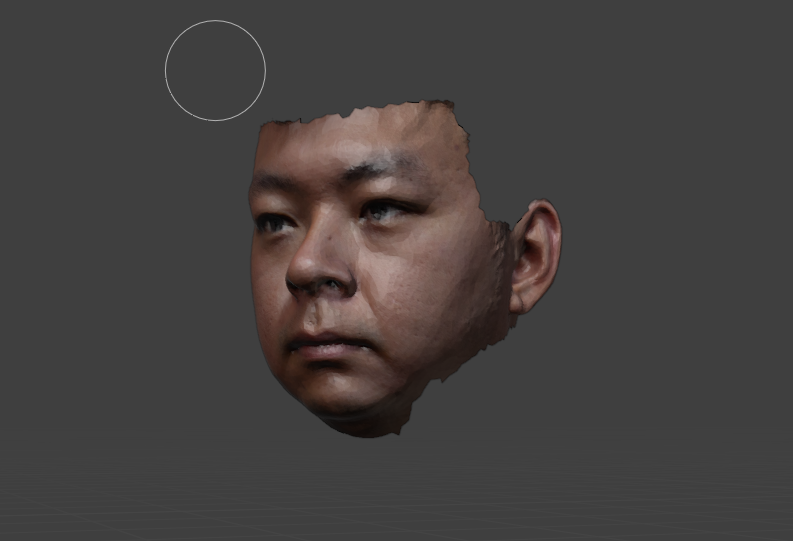
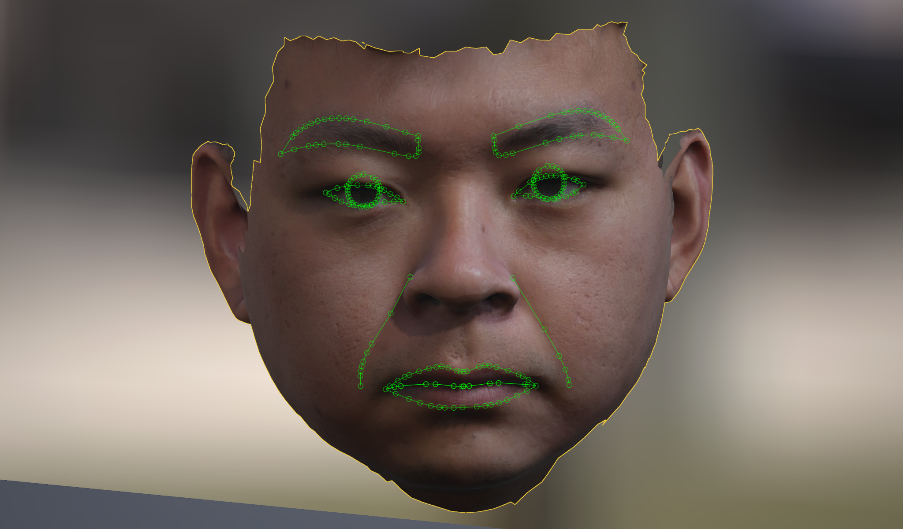
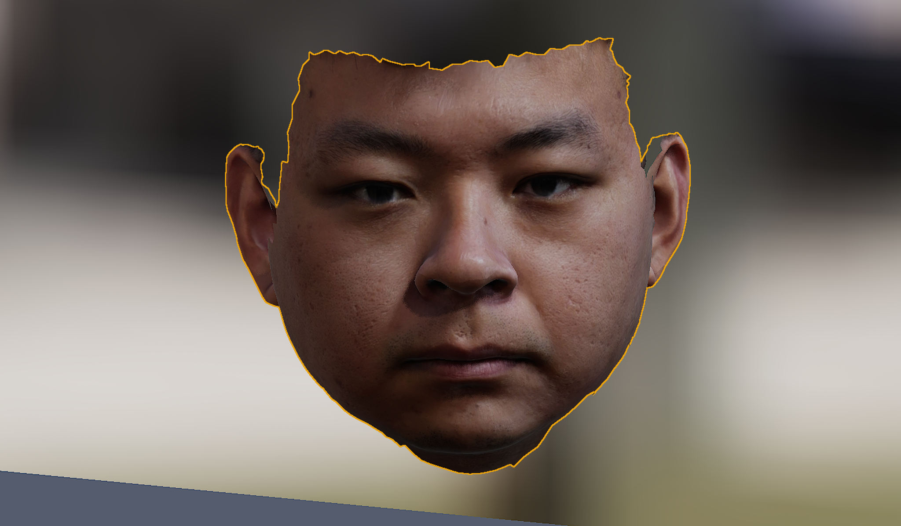

Research Demo · 3D reconstruction, digital human cloning and synchronised embodiment
From 3D Scan to MetaHuman, Voice Clone and Synchronised Embodiment
This work presents a full identity-preserving pipeline in which a real person is reconstructed from high-detail visual capture, translated into a highly realistic digital human, aligned with cloned voice and animation, and then connected across three coordinated embodiments: the physical humanoid embodiment, the MetaHuman agent embodiment and the original personal identity.
Featured Demo
The first video below is the original short demo reel and remains the first media element on the page. It gives an immediate overview of the visual direction, expressive quality and synchronisation concept before the reconstruction steps are unpacked in detail.
The original demo reel is kept at the top to introduce the overall embodiment concept before the reconstruction pipeline and the final synchronised showcase.
This stage presentation frame is placed directly after the first demo because it shows the public-facing deployment condition: a highly realistic digital persona functioning as a presentational and interactive embodied agent in a live environment.
Why This Matters
The core value of this pipeline is that it transforms a person from a one-off scan or one-off recording into a reusable, controllable and synchronisable digital human representation. Once that identity has been reconstructed, refined and linked to voice and behaviour, it can support much richer forms of analysis, simulation and training than static video or static medical documentation alone.
In healthcare and human-centred AI settings, this opens a powerful direction for building high-fidelity patient surrogates from real data. A digital version of the person can preserve facial structure, expressive tendencies, speaking style and interaction dynamics in a form that can be replayed, analysed, stress-tested and simulated many times without repeatedly burdening the original patient.
Instead of relying only on direct exposure to real patients during early-stage training, clinicians and AI systems can rehearse on realistic, identity-grounded digital cases first. That means safer preparation, more repeatable evaluation, and the possibility of running thousands of controlled interactions before deployment in real human settings.
Reconstruction and Adaptation Pipeline
The pipeline starts from captured identity material and progressively converts it into a controllable digital human. Each step increases structure, realism and deployability. Raw shape information becomes visually interpretable facial rendering; that rendering is then aligned, refined and prepared for transfer into a high-fidelity avatar framework that supports animation, voice-driven performance and embodied interaction.

1. Raw 3D identity acquisition
The process begins with the source identity material that anchors the full workflow. This stage establishes the facial proportions, global structure and overall likeness that must be preserved through all later transformation steps.
2. Mesh inspection, topology diagnosis and cleanup
The second stage focuses on structural inspection. Surface irregularities, dense triangulation, unstable contour regions and deformation-prone areas are examined so the identity can be stabilised before transfer into a riggable digital-human system.

3. Texture projection and canonical facial rendering
A controlled facial rendering is then produced so that likeness, skin response and major facial traits can be checked from a stable viewpoint. This stage is critical because it turns raw geometry into an identity-bearing render that can be validated before animation and embodiment are introduced.

4. Landmark-guided semantic alignment
Facial landmarks are overlaid to align the rendered identity with a controllable facial schema. This creates the bridge between static likeness and dynamic control, making it possible to preserve identity while preparing the face for retargeting, expression mapping and rig-consistent animation.

5. MetaHuman adaptation and high-fidelity material refinement
The aligned identity is then transferred into a more operational avatar structure that supports richer realism and more stable control. This is the stage where the person becomes suitable for integration with a high-fidelity digital-human system and for later refinement toward more realistic skin, shading and deformation behaviour.
6. Final photorealistic output
The endpoint is a visually persuasive digital human rather than a simple face asset. At this stage, the result is strong enough for presentation, telepresence, embodied interaction and synchronised use with conversational AI and humanoid platforms.
Why the Intermediate Rendering Stage Is So Important
One of the most important steps in the workflow is the controlled facial rendering stage between raw reconstruction and final avatar embodiment. This intermediate representation gives a stable plane for checking likeness, evaluating material continuity, correcting facial boundaries and validating whether the face will transfer well into a controllable digital-human framework.
Without this stage, the jump from raw capture to fully rigged embodiment becomes much less reliable. With it, the pipeline gains a clear point where appearance, structure and control-readiness can be inspected together before the final avatar system is locked in.
Three Synchronized Embodiments
The end result is not just a single avatar. It is a coordinated identity stack in which one person can exist simultaneously in three linked conditions that can talk to each other, mirror each other and be used for different purposes depending on the setting.
Physical humanoid embodiment
In the first condition, the identity can be projected into a physical humanoid platform such as Ameca. This contributes co-presence, spatial interaction, robotic gesture and real-world conversational embodiment.
MetaHuman agent embodiment
In the second condition, the same identity appears as a photorealistic digital human. This contributes visual richness, remote deployment, cinematic quality and a flexible interface for simulation, presentation and telepresence.
Original personal embodiment
In the third condition, the original person remains the grounding source for likeness, voice and behavioural reference. This keeps the other embodiments anchored to a consistent identity rather than drifting into a generic animated character.
When these three conditions are synchronised, the system becomes a form of multi-embodiment identity orchestration. The original person, the MetaHuman agent and the humanoid platform can all be aligned through shared voice characteristics, matched dialogue timing and consistent expressive behaviour.
Why This Could Transform Patient Analysis, Monitoring and Simulation
A realistic digital clone of a patient could be extremely valuable for future analysis and monitoring workflows. Instead of only capturing isolated visits, clinicians could inspect how facial behaviour, vocal style, hesitation patterns, affective cues and interaction dynamics evolve over time in a persistent, replayable and comparable form. This would be especially useful in conditions where subtle change matters, such as mood disorders, cognitive decline, neuropsychiatric symptoms or post-intervention recovery.
The same idea becomes even more powerful in trial and simulation settings. Doctors could train on realistic case representations derived from real data before interacting with actual patients. They could practise conversations, diagnostic questioning, emotional handling and observational reasoning with a digital counterpart that behaves like a high-fidelity stand-in rather than a simplistic chatbot or scripted mannequin.
That also matters for embodied AI. Humanoid systems such as Ameca could be trained against highly realistic digital cases that reproduce facial emotion, behavioural cues, conversational timing and condition-linked patterns. Instead of using real patients repeatedly for early-stage rehearsal, one could run thousands of controlled training cycles on digital cases first, refine the embodied system, test failure modes, and only then move to carefully supervised real-world deployment.
In that sense, the digital clone is not just a visual novelty. It becomes a bridge between data capture, embodied simulation, doctor training, AI training and safer deployment. It allows repeated exposure, comparative testing, consistent benchmarking and structured scenario design at a scale that would be difficult, costly or ethically burdensome with constant direct reliance on real patients alone.
In practice, this kind of identity-preserving patient simulation should be used with explicit consent, clear provenance, strong governance and careful restrictions on how likeness, voice and behavioural data are stored, cloned and replayed.
Final Synchronized Demonstration
The video below is the final end-to-end showcase and is intentionally moved to the bottom of the page, where it now acts as the culmination of the full explanation above. It demonstrates the completed synchronisation concept in which rendering, cloned voice and embodied agent logic converge into a coherent multi-form identity.
Final synchronised demonstration showing how the digital human rendering, cloned voice and embodied agent behaviour can be brought together into a unified presentation.